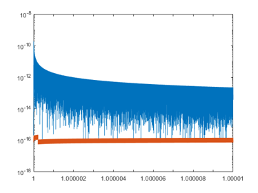
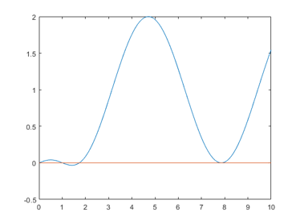
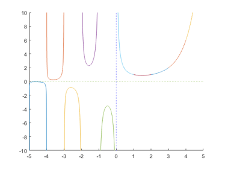

DEMOSTDFCTS Interval standard functions in INTLAB
Contents
- Input arguments I
- Input arguments II
- Accuracy of standard functions
- Nonlinear equations involving standard functions I
- Inclusion of the solution of nonlinear systems with standard functions
- The range of a function and overestimation
- Nonlinear equations involving standard functions II
- Verification of two roots
- Accuracy of the gamma function I
- Accuracy of the gamma function II
- Accuracy of the gamma function III
- Inverse gamma function
- Minimum of the gamma function
- Enjoy INTLAB
As explained in "DEMOINTVAL", standard functions with interval argument compute an inclusion of the true function value or the true function range.
Input arguments I
Special care is necessary if an input argument is not a floating-point number. For example,
format long _ x = intval([2.5 -0.3]); y = erf(x)
intval y = 0.99959304798255 -0.32862675945912
computes the true range of the error function erf(2.5), but not necessarily of erf(-0.3). To obtain true results use
x = intval('2.5 -0.3');
y = erf(x)
intval y = 0.99959304798255 -0.32862675945912
Note that intval converts a character string representing a vector always into a column vector. To see the accuracy of the result, the infsup-notation may be used:
infsup(y) relerr(y)
intval y = [ 0.99959304798255, 0.99959304798256] [ -0.32862675945913, -0.32862675945912] ans = 1.0e-15 * 0.055533750803183 0.422296341011770
Input arguments II
Similarly, the range of a function is included by
x = intval('[2.5,2.500001]')
y = erf(x)
intval x = 2.500001________ intval y = 0.99959305______
Note that the large diameter of the output is due to the large diameter of the input.
Accuracy of standard functions
The complementary error function erfc(x) is defined by 1-erf(x). It rapidly approximates 1 for larger x. In this case erfc(x) is much more accurate than 1-erf(x).
x = intval(5); y1 = erfc(x) y2 = 1 - erf(x) infsup([y1;y2])
intval y1 = 1.0e-011 * 0.15374597944280 intval y2 = 1.0e-011 * 0.15375_________ intval = 1.0e-011 * [ 0.15374597944280, 0.15374597944281] [ 0.15374368445009, 0.15375478668034]
Sometimes the built-in standard functions are not very accurate:
x = linspace(1+1e-14,1+1e-5,100000); y = acoth(x); Y = acoth(intval(x)); close, semilogy( x,abs((y-Y.mid)./(y+Y.mid)), x,relerr(Y) )
Nonlinear equations involving standard functions I
The zero of a nonlinear function may be approximated by some Newton procedure. Consider
x = linspace(0,10); f = @(x) erf(x)-sin(x) close plot(x,f(x),x,0*x)
f =
function_handle with value:
@(x)erf(x)-sin(x)
 The graph shows the function erf(x)-sin(x) between 0 and 10. Besides the obvious root zero there seem to be two small roots near 1 and 2, and mathematically it follows that there must be two roots near 8.
To approximate the roots, a Newton procedure may be used. For example
x = 1; for i=1:5 y = f(gradientinit(x)); x = x - y.x/y.dx end
x = 1.009823156064284 x = 1.009829234350912 x = 1.009829234354570 x = 1.009829234354571 x = 1.009829234354570
Inclusion of the solution of nonlinear systems with standard functions
As expected, the iteration converges very rapidly. The final value is a very good approximation of a root of f, and an inclusion is computed by
Y = verifynlss(f,x)
intval Y = 1.00982923435457
The range of a function and overestimation
The computed inclusion of the range of a function is a true estimate, but may be not sharp:
x = infsup(0,1); yinf = f(x)
intval yinf = [ -0.84147098480790, 0.84270079294972]
The inclusion can be improved using affine interval arithmetic:
yaff = f(affari(x))
affari yaff = [ -0.05999375863532, 0.10111067175095]
Nonlinear equations involving standard functions II
More interesting is the root cluster near x=8. An attempt to compute inclusions fails:
Y1 = verifynlss(f,7.5) Y2 = verifynlss(f,8.5)
intval Y1 =
NaN
intval Y2 =
NaN
The reason is that numerically this is a double zero because erf(8) is very close to 1, as can be checked by erfc(8) = 1-erf(8) :
y = erfc(intval(8))
intval y = 1.0e-028 * 0.11224297172982
At least an inclusion of the extremum of f near 8 can be computed. Clearly it must be near to 2.5*pi.
Y = verifylocalmin(f,8) y = 2.5*pi
intval Y = 7.85398163397448 y = 7.853981633974483
For interval enthusiasts an inclusion of 2.5*pi can be computed as well. Note, however, that this is only close to the extremum.
y1 = 2.5*intval('pi')
intval y1 = 7.85398163397448
Verification of two roots
In the previous example, the function f has a nearly double root. It can be shown that a perturbed function g has a true double root:
Y = verifynlss2(f,8); root = Y(1) perturbation = Y(2)
intval root = 7.85398163397448 intval perturbation = 1.0e-015 * 0.______________
That shows that the function g(x) := f(x)-e with e included in the computed perturbation has a double root contained in Y(1).
Accuracy of the gamma function I
Usually, Matlab standard functions produce very accurate approximations. For example,
x = pi
y = gamma(pi)
Y = gamma(intval('pi'))
x = 3.141592653589793 y = 2.288037795340032 intval Y = 2.28803779534003
Here Y is a true inclusion of the value of the gamma function at the transcendental number pi: X=intval('pi') is an inclusion of the mathematical pi, and the gamma function for an interval argument produces an inclusion of all values, in particular for the transcendental number pi.
Accuracy of the gamma function II
For negative arguments something strange happens in Matlab. Consider
x1 = -171.5; x2 = -172.5; y1 = gamma(x1) y2 = gamma(x2)
y1 = Inf y2 = Inf
Regardless of the fact that for larger negative argument the gamma function is very small in absolute value, this cannot be true because the gamma function changes the sign when passing a negative integer:
close axis([-5 5 -10 10]) hold on for k=-5:5 x = linspace(k,k+1,10000); plot(x,gamma(x)) end plot([-5 5],[0 0],':',[0 0],[-10 10],'b:') hold off
The true values of the gamma function at x1=-171.5 and x2=-172.5 are indeed very small:
Y1 = gamma(intval(x1)) Y2 = gamma(intval(x2))
intval Y1 = 1.0e-309 * 0.19316265431712 intval Y2 = 1.0e-311 * -0.1119783503283_
Accuracy of the gamma function III
However, for negative values near integers, that is near poles, Matlab's built-in gamma function is sometimes very inaccurate. For some reason this happens only right to negative integers. For example,
e = 2^(-40); x = [-1-e -1+e]; gamma(x) gamma(intval(x))
ans = 1.0e+12 * 1.099511627775577 -1.099461386077834 intval ans = 1.0e+012 * 1.09951162777557 -1.09951162777642
In this case the input arguments -1+/-e are exactly representable floating-point numers. For the example this is not important because both the Matlab's approximate gamma function and INTLAB's verified gamma function use the same input.
As can be seen only 4 digits are correct for the second argument. Getting closer to the right of negative integers makes things worse:
x = succ(-1); gamma(x) gamma(intval(x))
ans =
-5.545090608933970e+15
intval ans =
1.0e+015 *
-9.00719925474099
Now the approximate value has no correct digit. If a symbolic toolbox is available, the accuracy of INTLAB's gamma function can be checked:
digits(100)
vpa( gamma(sym(x,'f')) )
ans = -9007199254740992.42278433509846729613925210329983419590041162513067567990574081550273403130673581014
Inverse gamma function
Using automatic differentiation, values of the inverse gamma function are easily approximated. For example, compute x such that gamma(x)=3:
x = 4; for i=1:5 y = gamma(gradientinit(x)) - 3; x = x - y.x/y.dx end
x = 3.601948119538654 x = 3.430611982891113 x = 3.406291166087256 x = 3.405870109547128 x = 3.405869986309577
This value is approximate, the true value can be verified as follows:
X = verifynlss(@(x) gamma(x)-3 , 4)
intval X = 3.40586998630956
Minimum of the gamma function
Similarly, the minimum on the real axis of the gamma function is enclosed by
mu = verifylocalmin(@gamma,2)
intval mu = 1.46163214496836
Enjoy INTLAB
INTLAB was designed and written by S.M. Rump, head of the Institute for Reliable Computing, Hamburg University of Technology. Suggestions are always welcome to rump (at) tuhh.de